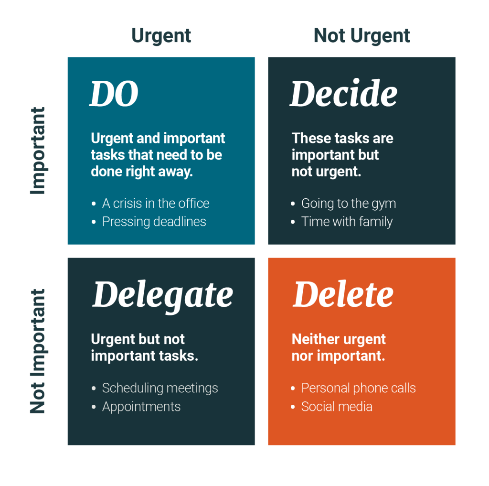

Laika plānošana

Kas ir laika plānošana?
Laika plānošana ir veids, kā mēs izvēlamies izmantot un organizēt savu laiku.
Kāpēc nepieciešams plānot laiku?
Laiks jāplāno, jo:
laika menedžments = dzīves menedžments;
laika plānošana nepieciešama mērķu realizēšanai;
efektīva laika plānošana ļauj mums maksimāli izmantot mūsu dienu, ātrāk paveikt uzdevumus un prioritizēt svarīgāko
Kā plānot savu laiku?
Ir vairāki veidi kā plānot laiku, šeit ir dažas metodes:
1. Pareto analīze (arī 80/20 paņēmiens)
80/20 ir paņēmiens, ko radījis itāļu ekonomists Vilfredo Pareto.
Tā ir ideja, ka 20% darbību ir atbildīgas par 80% rezultātu.
Pareto analīzes mērķis ir palīdzēt jums noteikt prioritāti uzdevumiem, kas ir visefektīvākie problēmu risināšanā.
2. Pomodoro paņēmiens
Pomodoro paņēmienu izveidoja uzņēmējs un autors Frančesko Cirillo.
Šis paņēmiens izmanto taimeri, lai sadalītu jūsu darbu intervālos.
Katrs intervāls ir pazīstams kā Pomodoro, kas nosaukts pēc tomāta formas taimera, ko izveidoja Cirillo.
3. Eizenhauera matrica
Sakārtojiet savu uzdevumu sarakstu četros atsevišķos kvadrantos, sakārtojot tos pēc svarīgiem un nesvarīgiem un steidzamiem un nesteidzamiem.
Steidzami uzdevumi ir tie, kas, mūsuprāt, ir jāpaveic nekavējoties.
Svarīgi uzdevumi ir tie, kas veicina jūsu ilgtermiņa mērķu vai vērtību sasniegšanu.
Ideālā gadījumā jums vajadzētu strādāt tikai ar uzdevumiem divos augšējos kvadrantos — pārējie uzdevumi ir jādeleģē vai jāizdzēš.
4. Parkinsona likums
Šī nav laika plānošanas tehnika pati par sevi.
Tas ir likums, ko, saprotot, var izmantot kā vienu no visizdevīgākajām laika pārvaldības metodēm, taču jums būs jāiegulda darbs.
Tas nozīmē strādāt efektīvāk īsākos laika posmos.
laika plānošanas lietotnes